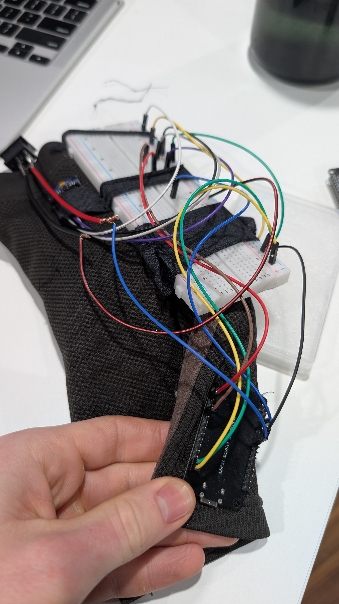

Jolt Mouse
Wearable armsleeve for amputee patients which wirelessly connects and controls a computer mouse.
Built at Hack Canada 2025

Created during the Hack Canada Hackathon, it serves to reconnect amputee or upper limb disabled patients to computers as simply as a normal bluetooth mouse would.
An IMU gyroscope measures tilt, while EMG's and a button control the clicking and freezing functions. All this is processed by an ESP32 microcontroller, which then wirelessly connects to the computer via bluetooth, taking full control of the mouse.
EMG and IMU controlled. BLE pipeline to the computer. It also has a website to monitor the sleeve specs such as power, sensitivity, and EMG location, which updates with live feedback.
Jolt
Hack Canada 2025Jolt is a wireless, wearable arm sleeve that turns natural arm motion into full computer cursor control. An IMU mounted on the sleeve tracks the orientation and movement of your forearm in real time, translating tilts and gestures into smooth, proportional mouse movement across your screen. No desk, no surface, no traditional mouse required.
The hardware is built around an ESP32, which reads data from the IMU and an EMG sensor, then broadcasts wirelessly over Bluetooth, pairing with any computer exactly like a standard Bluetooth mouse. No drivers, no dongles, just a seamless connection. A physical button on the sleeve lets you instantly freeze the cursor and re-zero its position, so you can reposition your arm without sending the pointer flying across the screen. Flexing your forearm triggers the EMG sensor to register a click, keeping the interaction feel intuitive and physical.
Alongside the sleeve sits a companion web dashboard where you can monitor and tune the system in real time: adjusting cursor sensitivity, toggling the freeze state, repositioning the EMG sensor's reference point, and watching live data from the sensors. Everything that would otherwise require digging into firmware can be controlled from the browser.